서울대학교 데이터사이언스대학원 정형수 교수님의 "데이터사이언스 응용을 위한 빅데이터 및 지식 관리 시스템" 강의를 필기한 내용입니다.
Design Choices
- Design choices: B+ tree 를 빠르게 하기 위해 고려할 수 있는 customization 들을 좀 알아보자.
- node size
- merge threshold
- variable key size
- intra-node search
Node size
- Node size 는 multiple of block size 가 기본인데
- 보통은 storage 가 느릴수록 node size 는 키운다 (Latency hiding)
- Key-value 의 데이터 크기도 영향을 준다
- 크기가 작으면 작은 사이즈의 node 로도 많은 kv 를 커버할 수 있으니까 작게 가는 것이 io amp 를 줄일 수 있다
- 크기가 크면 당연히 node 도 커져야 함
- 그리고 workload 종류에 따라서도 달라진다
- Scan workload 에서는 어차피 모두 접근하니까 node size 를 크게하는 것이 유리하고
- Point access (root-to-leaf traversal) 는 반대로 node size 를 작게 해서 한번에 많은 node 를 가져오는게 유리하다.
- 그래서 inner node 와 leaf node 의 node size 를 다르게 하는 경우도 있다.
Merge threshold
- Merge 를 하면 tree depth 도 줄어들고 방문해야 하는 node 도 줄어들 수 있으니까 하는게 좋기는 한데
- 당연히 overhead 가 있으니까 half 아래로 떨어져도 바로바로 merge 를 하지는 않는다.
- Logical delete 를 사용할 수도 있다: 즉, delete bit 를 사용해서 이놈이 죽었다고 tombstone 을 세우는 것
- 이 서류상으로만 죽은 놈을 ghost record 라고 부른다.
- 이게 더 좋은 이유는 delete bit 한개만 바꾸면 되기 때문에 더 빠르다는 것.
- Page header 에 이 ghost record count 를 통계내서 merge 에 참고한다: 즉, ghost record 의 비율을 이용함.
- 아니면 underflow (below-half) 들을 그냥 냅뒀다가 한가한 시점에 그냥 merge 하는 경우도 있다.
Variable length key
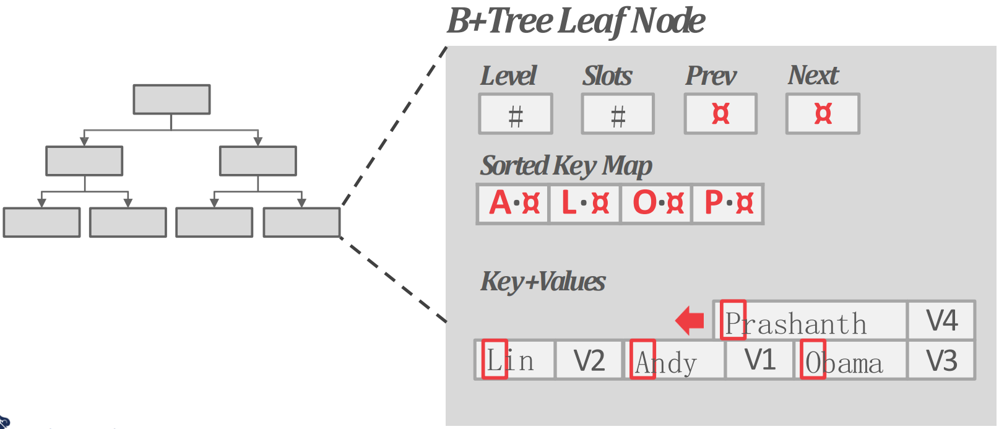
- 당연히 node 를 variable size 하게 하거나 padding 을 두는 방법은 사용하지 않는다.
- (당연히 key 는 node 내에서 sorting 되어 있으니까) per-node sorted key map 으로 indirection 하는 방법을 사용한다.
- 즉, node 내에 key-value 를 저장하는 list 가 따로 있고 (여기는 sorting 되어 있지 않음) 여기의 entry 를 가리키는 sorted key map (여기는 sorting 된 순서) 를 유지하는 방법
- Node size 제한에 따라 한 node 에서 커버하는 key range 가 그리 넓지 않고, 따라서 이 key map 의 key 들은 bit-packing 되어 이 key map 의 사이즈는 그리 크지 않다
Intra node search
- 말 그대로 node 내에서 key 를 찾는 방법이다.
- 보통 sort 되어 있기 때문에 여기서는 binary search 를 한다.
- 다만 linear 밖에 못하면 그렇게 한다.
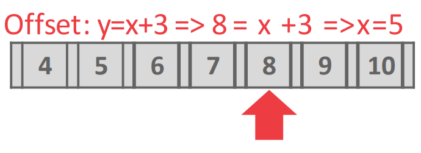
- 혹은 Interpolation 을 할 수도 있다 (위 그림)
- Key 들을 linear regretion 하여 그냥 수식으로 key 의 offset 을 바로 계산하는 방법
- Key 들이 선형 분포를 이룰 때 (즉, key 와 offset 이 1차원 방정식으로 나타내질 때 - y=x+3 등의 분포)
- 이 key 로 offset 을 딱 계산해서 바로 접근
- 당연히 항상 사용할 수 있는 것은 아니다
Optimization (Index magic)
Prefix compression
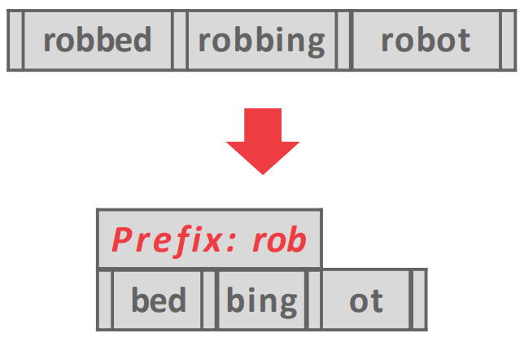
- 이름 그대로 prefix 가 같으면 이 중복된거를 잘라버려 key size 를 줄이는 것
- BP 와 비슷하다고 생각하면 된다.
Deduplication
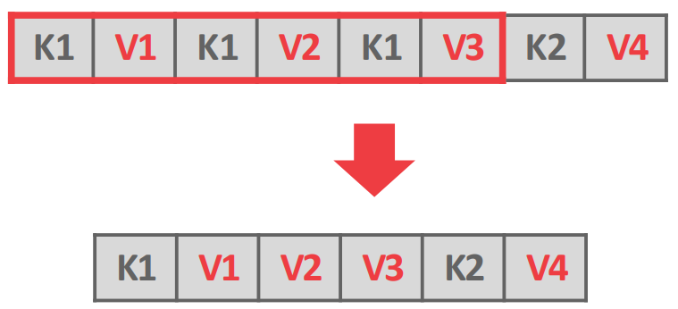
- Leaf node 에서 중복된 key 들을 합쳐버리는 것: 위 그림에서 보여지는게 전부다.
- MVCC 를 위해 중복된 key 가 있을 수 있고 (가령 postgresql 에서는 update 를 tuple 로 때려박으니까) 이때 이런 dedup 으로 공간을 절약할 수 있다.
Suffix truncation
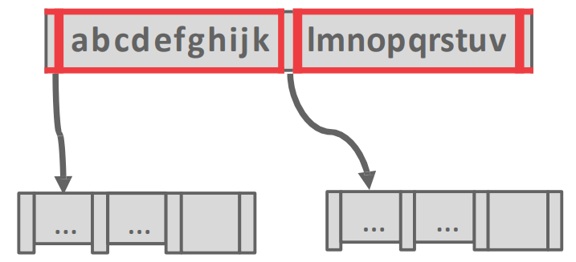
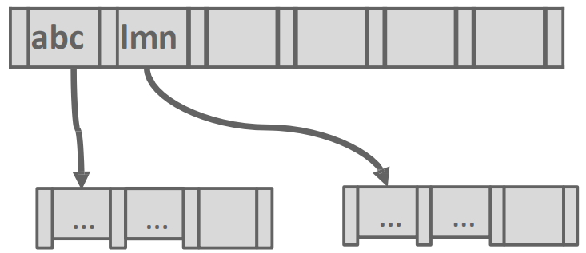
- Inner node 의 경우에는 그냥 guidepost 이기 때문에 key 가 모두 필요하지 않다.
- 그래서 구분지을 수 있는 최소한의 prefix 만 남기고 나머지의 suffix 는 다 버리는 방법이다.
- 가령 위의 예시에서는
abc와lmn만 남기는 등
- 가령 위의 예시에서는
Bulk insert
- 기존의 table 에서 index 를 rebuild 하는 등의 많은 양의 tuple 을 insert 하는 경우에는 그냥 이것을 하나하나 B+ tree 에 넣는것보다
- 그냥 key 로 sorting 한 다음에 bottom up 으로 해주는게 제일 빠르다.
- 그리고 이때는 leaf node 에 많은 양의 value 를 넣어서 꽉꽉 채운다고 한다.
- 돈받는 DB 들은 다 이런 옵션을 지원한댄다.
Pointer swizzling
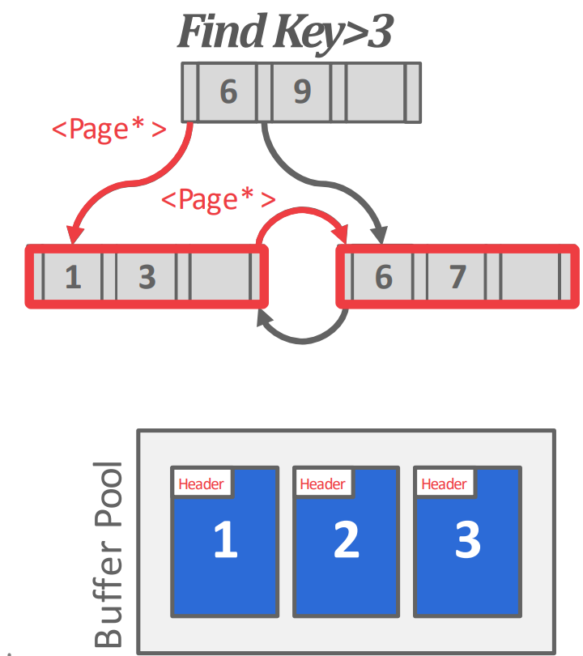
- B+ tree 에서 모든 pointer 는
page_id로 되어 있다. - 근데 이 indirection 에서 logical (
page_id)-physical (memory address) 간의 translation overhead 를 줄이기 위해 - page 가 buffer pool 에서 pinning 되면 해당 page 를 pid (logical) 로 접근하는 것이 아니라
- 해당 page 를 memory address 로 바로 접근할 수 있게 해주는 것이 pointer swizzling 이다.
- 따라서 자주 접근되는 node 에 대해서는 page id 가 아닌 memory address 로 접근할 수 있게 해주면 그만큼 translation overhead 를 줄일 수 있다.
- Root 와 root 인접 node 들이 많이 이렇게 처리된다
- 대신 단점은 해당 page 가 계속 pinning 되어 evict 되지 않는 문제가 있다.
Partial index
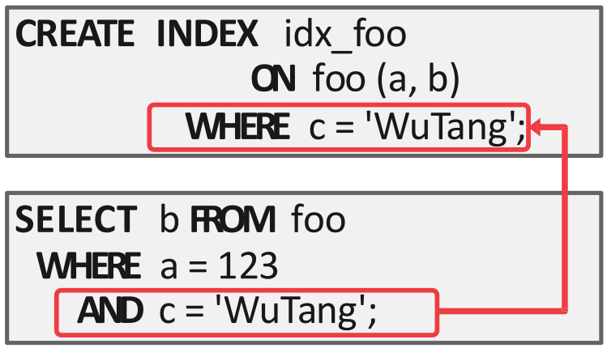
- Index 를 생성할 때 predicate 을 줘서 특정 tuple 에 대해서만 (subset of the entire table) index 를 생성하는 기능.
- 어떤 predicate 을 엄청 자주 쓰는 경우에 이것이 도움이 되며
- 이런 index 는 사이즈도 작고 insert, update 도 (entire table 에 비하면) 적기 때문에 관리 비용도 적다.
Index-only scan
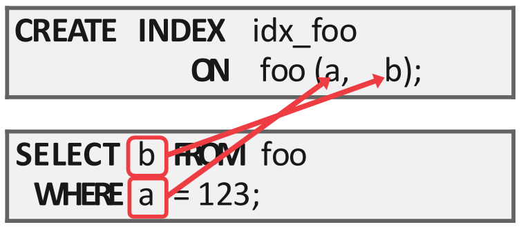
- Query processing 을 위해 필요한 column 들이 이미 index 에 다 들어가 있으면 굳이 data page 까지 갈 필요가 없다.
- 이런 것을 Index-only scan 이라고 하고, data page 에 가지 않기 때문에 buffer pool 의 contention 도 덜어준다.
INCLUDE clause
SELECT B
FROM example_table
WHERE A = something;- 위와 같이 column A 를 predicate 로 하여 lookup 을 하는데 여기에서 column B 를 조회하는 쿼리의 경우에
- column A 로 index 를 만들면 일단 lookup 은 빨라진다
- 근데 B 를 찾을 때 index 를 타고 가서 tuple 을 가져온 다음에 B 를 가져와야 하니까
- 이 overhead 를 줄이기 위해 index leaf node 에 B 를 포함시켜버리는 것
- “leaf” 다: search key 에는 B 는 포함되지 않는다
- 다만 이렇게 하면 B 가 index 에도 저장되므로 redundancy 가 늘어나고
- 따라서 update 성능이 아주 구려진다
- SQL 에서는
CREATE INDEX … INCLUDE형태다
Bloom filter
- Bloom filter
- hash func 를 여러개 사용하고 하나의 bitmap 을 유지해서 false positive 에 대한 확률을 줄인다
- 헷갈리지 말자; bitmap 을 여러개 사용하지는 않는다
- 여러개의 hash func 의 결과로 나온 bit (index) 를 하나의 bitmap 에서 모두 킨다
- , 이면
- bitmap 에서 2번째, 6번째 bit 를 모두 킨다.
- bitmap 의 사이즈는 백만bit 정도 된다 한다.
Skiplist
여기부터는
2024-10-09강의
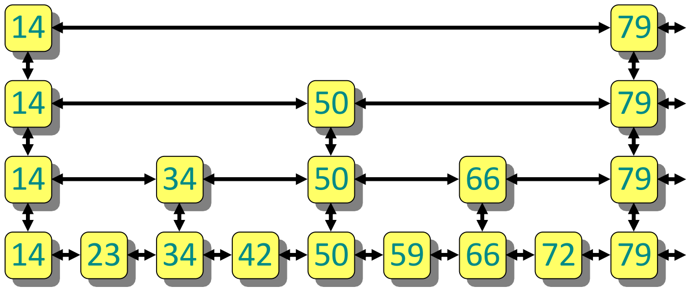
- 이게 뭔지는 알거다: list 를 여러개를 두되, level 의 list 는 level 의 subset 만 가지도록 해서 node traversal 을 skip 하는 것.
- 이렇게 상위 level 에서 사용하기 위해 node 를 올리는 것을 promote 라고 한다.
- 여기서의 key 는 search key, value 는 RID 이다.
- 참고로 1990 에 제안되었다고 한다 (논문).
- 이놈을 사용하면 장점은
- Memory 를 tree 에 비해 적게 사용할 수 있고
- Tree 는 log-time search 를 하기 위해 rotation 이나 split 을 해야 했던 반면 이놈은 그런거 없이도 log-time 이 가능하다.
- 대신 단점은
- 각 node 의 사이즈가 작기 때문에, small read, write 가 많아져 disk based 에서는 별로 안좋다고 한다.
- 참고로 마찬가지의 이유로 red-black tree 도 disk based 에서 별로 안좋다.
Skip count
- 얼마나 skip 해야 할까?
- Two-level skip list 에서 우선 생각해 보자:
- 위의 list 가 , 아래의 list 가 일때
- 로 많이 promote 하면 에서 움직이는 시간은 많지만 로 떨어진 다음에 움직여야 하는 짧다.
- 반대로 로 적게 promote 하면 에서 움직이는 시간은 적고 로 떨어진 다음에는 많은 거리를 가야 한다.
- 따라서 trade-off 가 있는 셈이고, 이 둘을 같게 해주는 것이 최적이겠다 그쵸?
- 의 사이즈는 이고 의 사이즈는 일 때
- 에서 노는 시간의 최대는: , 에서 노는 시간의 최대는:
- 왜냐면 의 사이즈 를 의 사이즈 로 나눈 값 ( ) 이 결국에는 이 한번에 skip 하는 양이기 때문.
- 따라서 저 두개가 같아야 하니까:
- 즉, skip 해야 하는 개수는 사이즈의 루트가 되고,
- (여기부터는 bottom level list count 를 라고 하자.) 에서 움직이는 양과 에서 움직이는 양이 으로 동일하기 때문에, 시간복잡도는 가 된다.
- 이런식으로 -level 까지 전개시켜 보면 시간복잡도는 가 되고,
- 만약에 level 을 개를 준비하면 시간복잡도는
- 이 된다.
Operation
Insert
- 는 coin-toss 를 해서 몇번째 level 까지 promote 할 것인지 정한다.
- 즉, 일단 skiplist 를 쭉 따라가서 위치를 찾았으면
- 일단 거기에 node 를 하나 만들고
- 그때부터 한 level 올라갈 때마다 coin toss 를 해서 이 level 에 node 를 promote 할지 결정한다.
- 그래서 fail 이 나오면 거기서 멈추고 pointer 연결을 해준다.
- 이것은 일단 demote pointer (아래로 떨어지는거) 를 다 연결해 주고
- 다음 sibling 으로 가는 pointer 를 연결해 준 뒤
- 아래 level 부터 들어오는 pointer 를 연결해 준다.
- 이 순서로 하는 이유는 들어오는 pointer 를 연결하는 것이 commit 과 유사하기 때문.
Search
- 찾는 것은 제일 상위 level 에서부터 시작해
- Search key 가 다음 node 의 key 보다 크거나 같으면 다음 node 로 움직이고,
- 만약에 작으면 현재 node 에서 아래 level 로 떨어지는 것을 반복해서 찾아갈 수 있다.
Delete
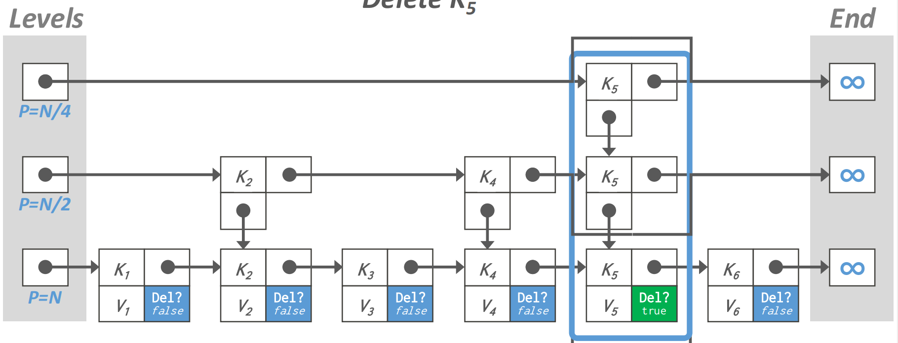
- 지우는 것은 2 단계로 수행된다.
- Logical delete: 일단 delete bit 를 켜서 이 node 는 지나쳐 가도록 하고
- Physical delete: 그 다음에 이놈을 참조하는 애들이 다 사라졌으면 그때 이것을 날린다.
Trie
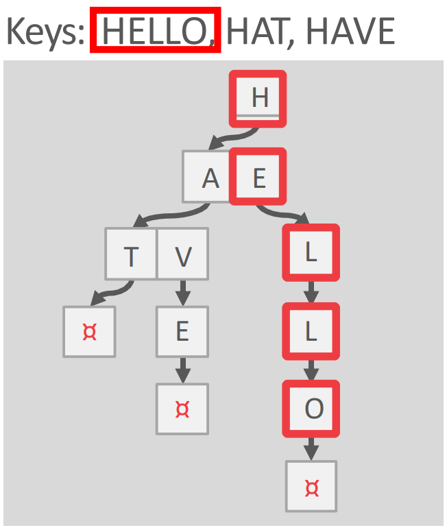
- Trie 는 뭐 알다시피 각 digit 별로 node 를 쫒아가서 존재 여부를 판단하게 해주는 tree 자료구조다.
- Digital search tree 혹은 Prefix tree 로 불린다.
- 이놈이 탄생하게 된 배경은:
- 일단 bloom filter 는 확률적으로만 파악할 수 있다는 단점이 있었고
- B+ tree 같은 경우에는 각 inner node 로는 key range 만 알 수 있으니까 결국에는 존재 여부를 알기 위해서는 leaf 까지 가야 한다.
- 근데 이놈은 원하는 key 가 없을 때 digit 별로 쫒아가다가 끝까지 가지 않고 중간에서 존재하지 않는다는 것을 알아낼 가능성이 있다.
- 즉, early-reject 가 가능한 것.
- 따라서 structure 는 오직 key space 하고 key length 에만 영향을 받는다.
- 뭐 insert 순서라던가
- Rebalancing 과 같은 애들은 영향이 없다.
- 그리고 시간복잡도는 key length 에 대해 선형시간 복잡도를 갖는다.
- Trie 에서 span 이라는 것은 fanout 같은 것이라고 생각하면 된다.
- 구체적으로는 하나의 digit 이 trie node 를 구성하기 때문에, digit 의 bit 수에 따라 fanout 이 정해지기 때문.
- 그래서 bit 수를 span, 이 fanout 이 된다.
- 그리고 fanout 이 인 Trie 를 n-way Trie 라고 부른다.
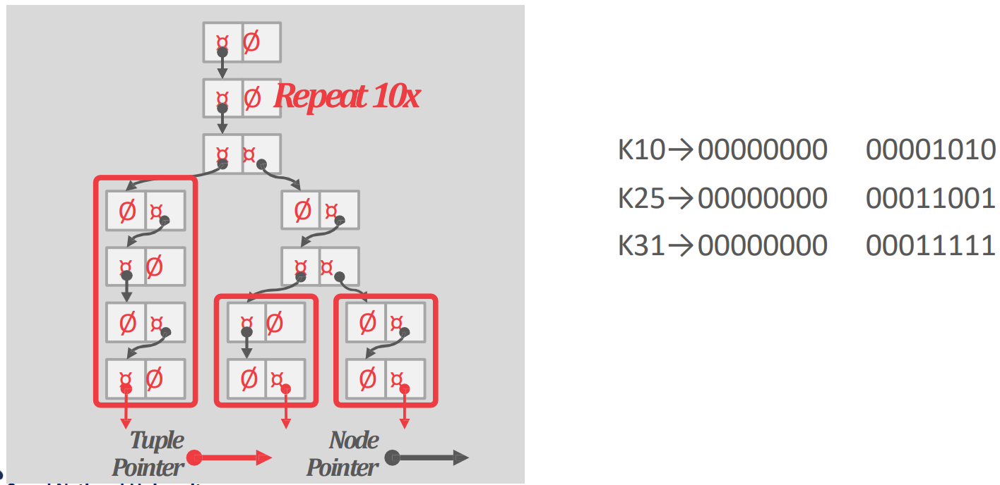
- 참고로 이런 1-bit span Trie 도 있다고 한다.
Inverted index, TF index
- 보통은 key 로 value 를 찾는게 index 인데
- 이놈은 value (의 일부분) 으로 key 를 찾게 해주는 것이다.
- 즉, Elasticsearch 처럼 keyword 로 document 를 찾아야 하는 용도에 의해 사용하는 index 인 것.
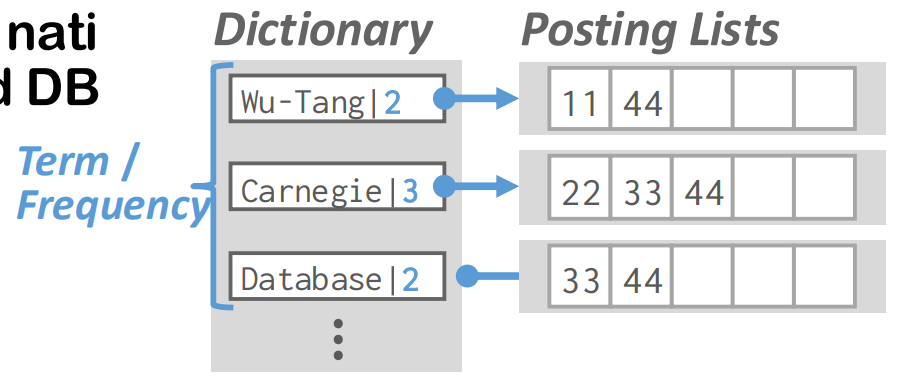
- 구체적으로는, 문자열을 다 “단어 (Term)” 단위로 쪼갠 뒤에
- Dictionary 를 하나 구성해 이 단어가 등장한 횟수 (Frequency) 를 적고
- 해당 단어가 등장한 document 의 ID 를 list 로 달아놓는다.
- 용도는 위에서 말한 것 처럼 검색엔진에서 keyword search 를 하거나, 아니면 SQL 에서는
LIKEclause 를 처리하는 데에서 사용할 수 있다.